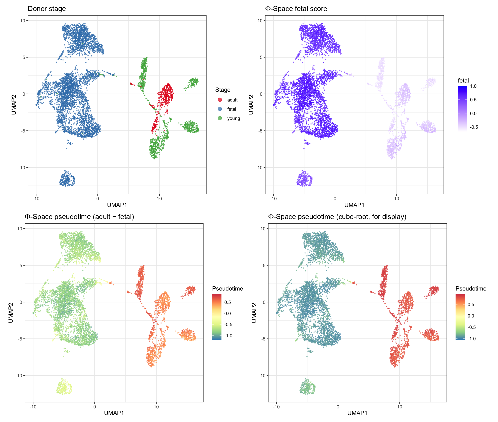
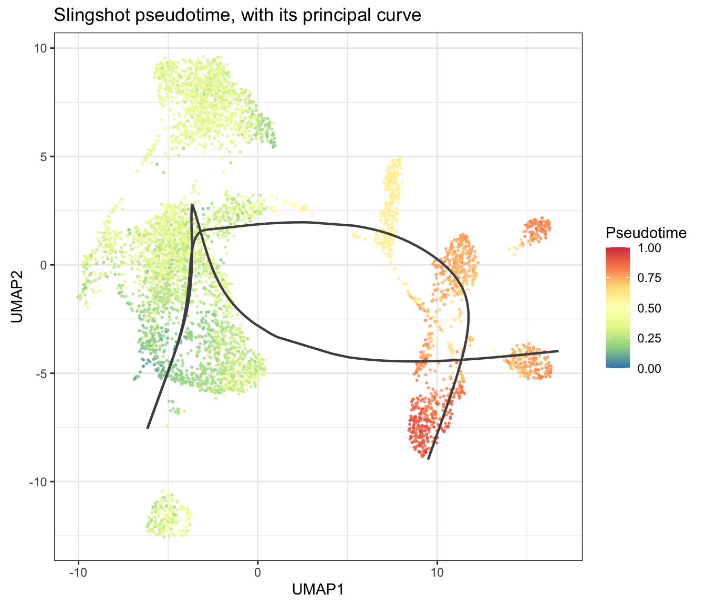
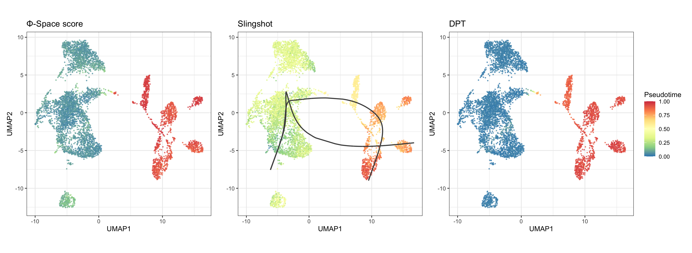
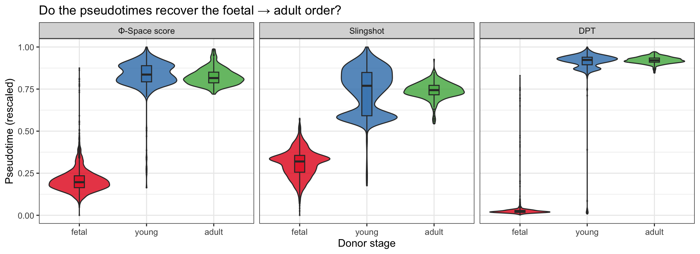
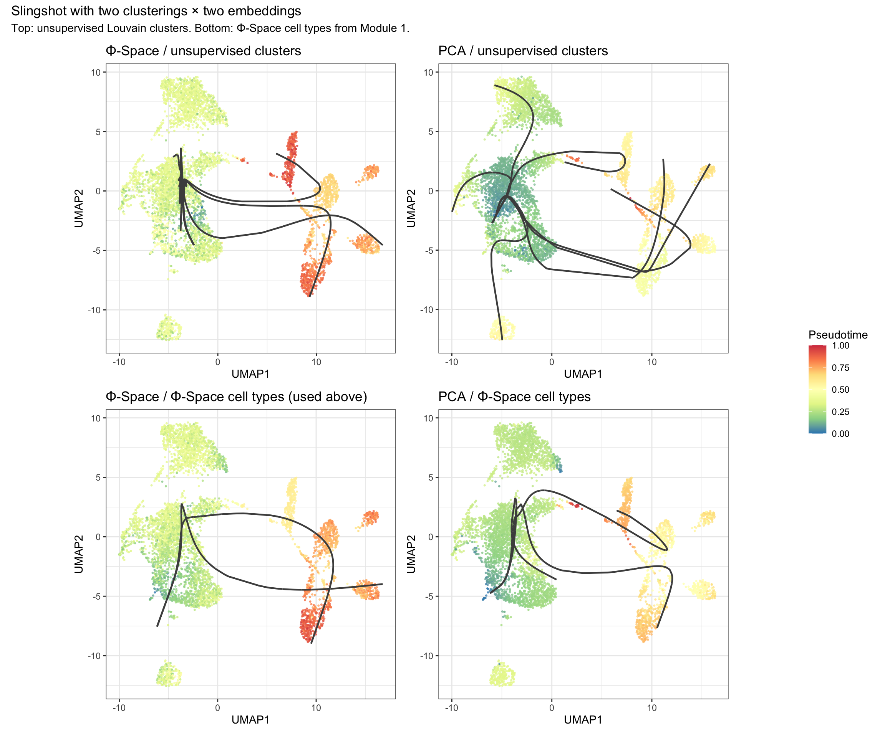
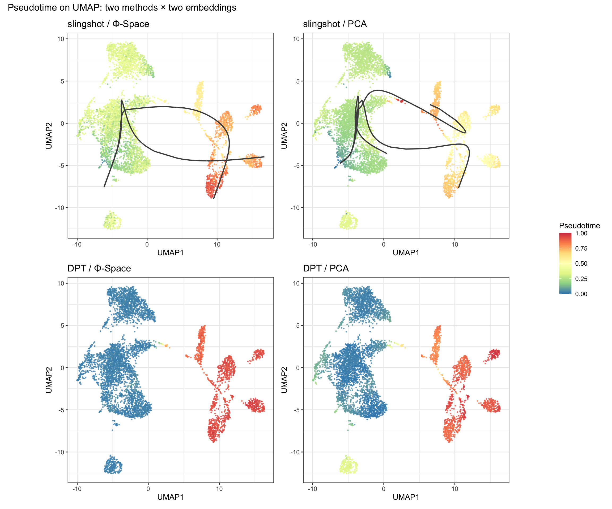
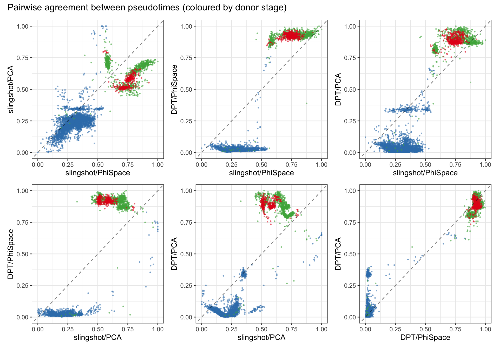
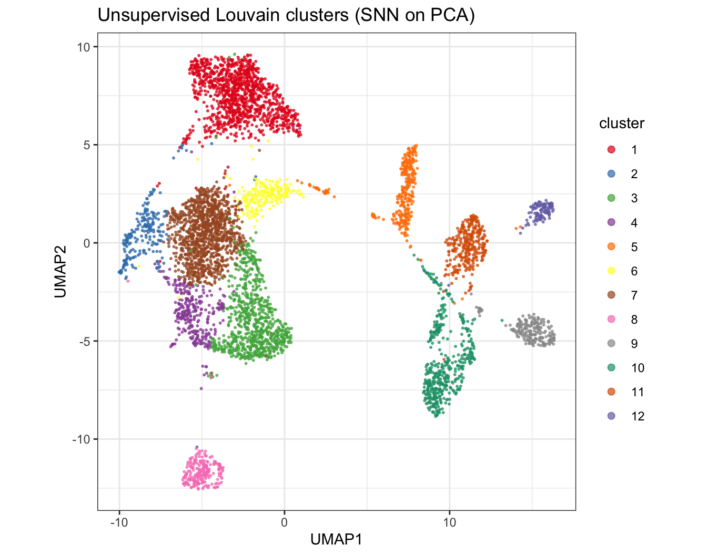

In Module 1 we gave each nucleus a continuous score for every reference phenotype. Within cardiomyocytes, those scores already hint at a foetal→adult gradient. Module 2 turns that hint into a single number per cell: pseudotime.
Pseudotime orders cells so that cells close together in a biological
process get close values. It is not real time, and its scale is
arbitrary: only the ordering matters. Which end counts as
“early” is a separate choice, and for some methods it has to be
supplied. Here the Φ-Space fetal score tells us where
maturation starts.
We compute three pseudotimes, all from the Φ-Space scores:
We then check them against each other and against the donors’ ages, which none of the methods sees. Finally, we look at a common pitfall: slingshot’s answer depends on how you cluster the cells.
A Going further section at the end repeats the analysis on a PCA embedding of gene expression instead of Φ-Space, for anyone who wants to compare.
By the end of this module you will be able to:
library(SingleCellExperiment)
library(slingshot)
library(destiny)
library(scater)
library(ggplot2)
library(dplyr)
library(tibble)
library(patchwork)
library(RColorBrewer)Module 1 handed over a single file: the query with Φ-Space scores in
reducedDim, scran logcounts in
assay(query, "logcounts"), and the per-cell annotations
(PhiCellType, PhiCellTypeBroad,
PhiAge, group, …) in colData.
query <- readRDS(file.path(results_dir, "05_phispace_query.rds"))
cat("Assays: ", paste(assayNames(query), collapse = ", "), "\n")## Assays: counts, logcountscat("reducedDims: ", paste(reducedDimNames(query), collapse = ", "), "\n")## reducedDims: PhiSpacecat("Cells: ", ncol(query), "\n")## Cells: 10000cat("Broad types: ", paste(sort(unique(query$PhiCellTypeBroad)),
collapse = ", "), "\n")## Broad types: Adipocyte, Cardiomyocyte, Endocardial, Endothelial, Epicardial, Fibroblast, LEC, Lymphoid, Mast, Myeloid, Neuronal, Pericyte, vSMCresults_dir <- Sys.getenv("SCW_RESULTS", "../results")
dir.create(results_dir, showWarnings = FALSE, recursive = TRUE)Cardiomyocytes carry the foetal→adult maturation signal we want to trace. Running pseudotime on all cell types at once would mix several biological processes into one trajectory.
cm <- query[, query$PhiCellTypeBroad == "Cardiomyocyte"]
cat("Cardiomyocytes:", ncol(cm), "\n")## Cardiomyocytes: 5411print(table(cm$group))##
## adult fetal young
## 409 4016 986print(sort(table(cm$PhiCellType), decreasing = TRUE))##
## Cardiomyocyte:Fetal_enriched_metabolic Cardiomyocyte:Other
## 1557 1375
## Cardiomyocyte:Metabolic Cardiomyocyte:Fetal_enriched_conduction
## 1116 652
## Cardiomyocyte:DCM_HCM_enriched Cardiomyocyte:Inflammatory
## 439 211
## Cardiomyocyte:Stressed
## 61The fine Φ-Space labels (Cardiomyocyte:Fetal_enriched_*,
:Metabolic, :Stressed, …) split the
cardiomyocytes into biologically meaningful subtypes. We’ll use them as
slingshot’s clusters.
To display pseudotimes we need a 2D map of the cells. We compute a standard pipeline on the logcounts: highly variable genes, then PCA, then UMAP. None of the pseudotime methods below uses the UMAP; it is only for plotting, so that every method is drawn on the same layout.
pca_cache <- file.path(results_dir, "06_cm_pca.rds")
if (file.exists(pca_cache)) {
cm <- readRDS(pca_cache)
message("Loaded cached CM object with PCA from ", pca_cache)
} else {
# Highly variable gene selection
gene_var <- rowVars(as.matrix(logcounts(cm)))
names(gene_var) <- rownames(cm)
n_hvg <- min(2000, nrow(cm))
hvg <- names(sort(gene_var, decreasing = TRUE))[seq_len(n_hvg)]
pca <- prcomp(t(as.matrix(logcounts(cm)[hvg, ])),
center = TRUE, scale. = FALSE)
reducedDim(cm, "PCA") <- pca$x[, 1:20]
saveRDS(cm, pca_cache)
}
cat("PCA dims: ", paste(dim(reducedDim(cm, "PCA")), collapse = " x "), "\n")## PCA dims: 5411 x 20cat("PhiSpace dims: ", paste(dim(reducedDim(cm, "PhiSpace")),
collapse = " x "), "\n")## PhiSpace dims: 5411 x 28We keep the first 20 principal components.
n_neighbors = 15 and min_dist = 0.5 were
chosen by trying several settings: smaller n_neighbors
broke the cardiomyocyte continuum into islands with no biological
meaning.
umap_cache <- file.path(results_dir, "06_cm_umap.rds")
if (file.exists(umap_cache)) {
reducedDim(cm, "UMAP") <- readRDS(umap_cache)
message("Loaded cached UMAP")
} else {
set.seed(42)
cm <- scater::runUMAP(cm, dimred = "PCA", name = "UMAP",
n_neighbors = 15, min_dist = 0.5)
saveRDS(reducedDim(cm, "UMAP"), umap_cache)
}A few small helpers for the plots and runs below:
umap_df <- as.data.frame(reducedDim(cm, "UMAP"))
colnames(umap_df) <- c("UMAP1", "UMAP2")
# Rescale to [0, 1] so different methods share one colour scale
rescale01 <- function(x) {
x <- x - min(x, na.rm = TRUE)
x / max(x, na.rm = TRUE)
}
# UMAP coloured by a pseudotime (blue = early, red = late)
umap_base <- function(pt_vec) {
ggplot(cbind(umap_df, pt = pt_vec), aes(UMAP1, UMAP2, colour = pt)) +
geom_point(size = 0.4, alpha = 0.7) +
scale_colour_distiller(palette = "Spectral", name = "Pseudotime") +
theme_bw(base_size = 11) +
theme(aspect.ratio = 1)
}
# Slingshot curves, re-fitted in UMAP space for display
embed_curves_df <- function(sds, label) {
curves <- slingCurves(embedCurves(sds, reducedDim(cm, "UMAP")))
do.call(rbind, lapply(seq_along(curves), function(i) {
s <- curves[[i]]$s[curves[[i]]$ord, , drop = FALSE]
data.frame(UMAP1 = s[, 1], UMAP2 = s[, 2],
lineage = paste0(label, "_L", i))
}))
}
with_curves <- function(p, crv_df) {
p + geom_path(data = crv_df, aes(UMAP1, UMAP2, group = lineage),
inherit.aes = FALSE, colour = "grey30", linewidth = 0.8)
}
# Run slingshot, or load a cached run
run_slingshot <- function(cache, dimred, clusters, start) {
fp <- file.path(results_dir, cache)
if (file.exists(fp)) {
message("Loaded cached ", cache)
return(readRDS(fp))
}
sds <- slingshot(
reducedDim(cm, dimred),
clusterLabels = clusters,
start.clus = start,
dist.method = "simple"
)
saveRDS(sds, fp)
sds
}
# One pseudotime per cell: the mean over slingshot's lineages
lineage_pt <- function(sds) rowMeans(slingPseudotime(sds), na.rm = TRUE)dist.method = "simple" is needed because slingshot’s
default distance fails when some clusters are very small.
The simplest ordering needs no trajectory model. The reference has
four age groups (fetal, young,
middle, old). We average the three post-natal
scores into an “adult” score and subtract the fetal
score:
\[\text{Φ-Space pseudotime} = \text{mean}(\text{young}, \text{middle}, \text{old}) - \text{fetal}\]
The raw difference has long tails, which squash the colour scale, so
for display we also show a cube-root version
(sign(x) · |x|^(1/3)). It compresses the tails without
changing the order of cells.
phi_scores <- reducedDim(cm, "PhiSpace")
adult_score <- rowMeans(phi_scores[, c("young", "middle", "old")])
cm$fetal_score <- phi_scores[, "fetal"]
cm$pt_phi_score <- adult_score - cm$fetal_score
cm$pt_phi_score_cr <- sign(cm$pt_phi_score) * abs(cm$pt_phi_score)^(1/3)
p_group <- ggplot(cbind(umap_df, group = cm$group),
aes(UMAP1, UMAP2, colour = group)) +
geom_point(size = 0.4, alpha = 0.7) +
scale_colour_brewer(palette = "Set1") +
theme_bw(base_size = 11) + theme(aspect.ratio = 1) +
guides(colour = guide_legend(override.aes = list(size = 3))) +
labs(title = "Donor stage", colour = "Stage")
p_fetal <- ggplot(cbind(umap_df, fetal = cm$fetal_score),
aes(UMAP1, UMAP2, colour = fetal)) +
geom_point(size = 0.4, alpha = 0.7) +
scale_colour_gradient(low = "white", high = "blue") +
theme_bw(base_size = 11) + theme(aspect.ratio = 1) +
labs(title = "Φ-Space fetal score", colour = "fetal")
p_phi <- umap_base(cm$pt_phi_score) +
labs(title = "Φ-Space pseudotime (adult − fetal)")
p_phi_cr <- umap_base(cm$pt_phi_score_cr) +
labs(title = "Φ-Space pseudotime (cube-root, for display)")
(p_group | p_fetal) / (p_phi | p_phi_cr)
The gradient from foetal to adult donors (top left) is matched by the Φ-Space pseudotime (bottom row). This is the baseline the fitted methods should reproduce: if they don’t, something has gone wrong.
Slingshot needs a starting cluster. We pick the
cardiomyocyte subtype with the highest mean fetal score:
Φ-Space sets the direction, and the clusters define the units the tree
is built from.
mean_fetal_by <- function(cluster_vec) {
tibble(cluster = cluster_vec, fetal = cm$fetal_score) |>
group_by(cluster) |>
summarise(mean_fetal = mean(fetal), n = n(), .groups = "drop") |>
arrange(desc(mean_fetal))
}
anchor_phict_tbl <- mean_fetal_by(cm$PhiCellType)
anchor_phict_tblstart_cluster_phict <- as.character(anchor_phict_tbl$cluster[1])
cat("start.clus:", start_cluster_phict, "\n")## start.clus: Cardiomyocyte:Othersling_phi_phict <- run_slingshot("06_slingshot_phi_phict.rds",
"PhiSpace", cm$PhiCellType,
start_cluster_phict)
cm$pt_sling_phi_phict <- lineage_pt(sling_phi_phict)
cat("Lineages found:", length(slingLineages(sling_phi_phict)), "\n")## Lineages found: 2slingPseudotime() returns one column per lineage; we
average them to get one pseudotime per cell.
curves_phi_phict_df <- embed_curves_df(sling_phi_phict, "phi_phict")
with_curves(umap_base(rescale01(cm$pt_sling_phi_phict)),
curves_phi_phict_df) +
labs(title = "Slingshot pseudotime, with its principal curve")
DPT needs a single root cell. We take the cell with
the highest fetal score.
root_cell <- which.max(cm$fetal_score)
cat("Root cell index:", root_cell,
" (fetal score =", round(cm$fetal_score[root_cell], 3), ")\n")## Root cell index: 1800 (fetal score = 1 )dpt_phi_cache <- file.path(results_dir, "06_dpt_phispace.rds")
if (file.exists(dpt_phi_cache)) {
dpt_phi <- readRDS(dpt_phi_cache)
message("Loaded cached DPT/PhiSpace result")
} else {
dm_phi <- DiffusionMap(as.matrix(reducedDim(cm, "PhiSpace")),
n_eigs = 20, sigma = "local",
verbose = FALSE)
dpt_phi <- DPT(dm_phi, tips = root_cell)
saveRDS(dpt_phi, dpt_phi_cache)
}
cm$pt_dpt_phi <- dpt_phi$dpt
summary(cm$pt_dpt_phi)## Min. 1st Qu. Median Mean 3rd Qu. Max.
## 0.0000 0.3599 0.5007 4.8707 16.3791 19.1739Without tips, destiny would pick end points itself. We
set the root explicitly so that DPT starts from the same place as the
other two pseudotimes.
cm$pt_phi_score_01 <- rescale01(cm$pt_phi_score_cr)
cm$pt_sling_phi_phict_01 <- rescale01(cm$pt_sling_phi_phict)
cm$pt_dpt_phi_01 <- rescale01(cm$pt_dpt_phi)
# `+` binds tighter than `|` and `/`, so wrap the whole layout before
# adding plot_layout(); otherwise it applies to the last panel only.
((umap_base(cm$pt_phi_score_01) + labs(title = "Φ-Space score")) |
(with_curves(umap_base(cm$pt_sling_phi_phict_01), curves_phi_phict_df) +
labs(title = "Slingshot")) |
(umap_base(cm$pt_dpt_phi_01) + labs(title = "DPT"))) +
plot_layout(guides = "collect")
Each method has its own scale, and only the order of cells matters, so we compare them with Spearman (rank) correlation.
pt_mat <- data.frame(
`Φ-Space score` = cm$pt_phi_score,
Slingshot = cm$pt_sling_phi_phict,
DPT = cm$pt_dpt_phi,
check.names = FALSE
)
round(cor(pt_mat, use = "complete.obs", method = "spearman"), 3)## Φ-Space score Slingshot DPT
## Φ-Space score 1.000 0.612 0.608
## Slingshot 0.612 1.000 0.611
## DPT 0.608 0.611 1.000The correlations are positive but well below 1: the three methods agree on the broad order, not on the details.
The donors’ stage is held-out information: no method saw it. If a pseudotime captures maturation, its values should rise from foetal to young to adult donors.
stage_df <- pt_mat |>
mutate(group = factor(cm$group, levels = c("fetal", "young", "adult"))) |>
tidyr::pivot_longer(-group, names_to = "method", values_to = "pseudotime") |>
group_by(method) |>
mutate(pseudotime = rescale01(pseudotime),
method = factor(method, levels = colnames(pt_mat)))
ggplot(stage_df, aes(group, pseudotime, fill = group)) +
geom_violin(scale = "width", alpha = 0.8) +
geom_boxplot(width = 0.15, alpha = 0.6, outlier.size = 0.3) +
scale_fill_brewer(palette = "Set1") +
facet_wrap(~ method, nrow = 1) +
labs(x = "Donor stage", y = "Pseudotime (rescaled)",
title = "Do the pseudotimes recover the foetal → adult order?") +
theme_bw(base_size = 12) +
theme(legend.position = "none")
What the plot shows:
The spread within each stage shows how much nuclei from donors of the same age differ, which is exactly what a single age label hides.
Slingshot builds its tree on cluster centres, so the clustering you give it is a modelling choice, not a preprocessing detail. To see how much it matters, we rerun slingshot with:
That gives four slingshot runs (2 clusterings × 2 embeddings), all started from the most foetal cluster.
# Unsupervised clustering: SNN graph on the PCA embedding, Louvain
cluster_cache <- file.path(results_dir, "06_cm_clusters.rds")
if (file.exists(cluster_cache)) {
cm$cluster <- readRDS(cluster_cache)
message("Loaded cached clusters")
} else {
set.seed(42)
snn <- scran::buildSNNGraph(cm, use.dimred = "PCA", k = 20)
cm$cluster <- factor(igraph::cluster_louvain(snn)$membership)
saveRDS(cm$cluster, cluster_cache)
}
start_cluster_unsup <- as.character(mean_fetal_by(cm$cluster)$cluster[1])
sling_phi_unsup <- run_slingshot("06_slingshot_phi_unsup.rds",
"PhiSpace", cm$cluster, start_cluster_unsup)
sling_pca_unsup <- run_slingshot("06_slingshot_pca_unsup.rds",
"PCA", cm$cluster, start_cluster_unsup)
sling_pca_phict <- run_slingshot("06_slingshot_pca_phict.rds",
"PCA", cm$PhiCellType, start_cluster_phict)
cm$pt_sling_phi_unsup <- lineage_pt(sling_phi_unsup)
cm$pt_sling_pca_unsup <- lineage_pt(sling_pca_unsup)
cm$pt_sling_pca_phict <- lineage_pt(sling_pca_phict)curves_phi_unsup_df <- embed_curves_df(sling_phi_unsup, "phi_unsup")
curves_pca_unsup_df <- embed_curves_df(sling_pca_unsup, "pca_unsup")
curves_pca_phict_df <- embed_curves_df(sling_pca_phict, "pca_phict")
p_phi_unsup <- with_curves(umap_base(rescale01(cm$pt_sling_phi_unsup)),
curves_phi_unsup_df) +
labs(title = "Φ-Space / unsupervised clusters")
p_pca_unsup <- with_curves(umap_base(rescale01(cm$pt_sling_pca_unsup)),
curves_pca_unsup_df) +
labs(title = "PCA / unsupervised clusters")
p_phi_phict <- with_curves(umap_base(cm$pt_sling_phi_phict_01),
curves_phi_phict_df) +
labs(title = "Φ-Space / Φ-Space cell types (used above)")
p_pca_phict <- with_curves(umap_base(rescale01(cm$pt_sling_pca_phict)),
curves_pca_phict_df) +
labs(title = "PCA / Φ-Space cell types")
((p_phi_unsup | p_pca_unsup) / (p_phi_phict | p_pca_phict)) +
plot_layout(guides = "collect") +
plot_annotation(
title = "Slingshot with two clusterings × two embeddings",
subtitle = "Top: unsupervised Louvain clusters. Bottom: Φ-Space cell types from Module 1."
)
Two numbers per run make the comparison concrete: how many lineages (branches) slingshot found, and how well the pseudotime agrees with donor stage.
stage_num <- as.numeric(factor(cm$group, levels = c("fetal", "young", "adult")))
sling_runs <- list(
"Φ-Space / unsupervised" = sling_phi_unsup,
"PCA / unsupervised" = sling_pca_unsup,
"Φ-Space / Φ-Space cell types" = sling_phi_phict,
"PCA / Φ-Space cell types" = sling_pca_phict
)
tibble(
run = names(sling_runs),
lineages = vapply(sling_runs, function(s) length(slingLineages(s)), integer(1)),
spearman_vs_stage = vapply(sling_runs, function(s)
round(cor(lineage_pt(s), stage_num, method = "spearman"), 2), numeric(1))
)Reading the figure and the table:
The lesson: don’t trust one trajectory or one check. Look at the structure of the trajectory itself, compare it with independent information such as donor age, and compare it with a method that does not need a clustering, such as DPT.
We save the cardiomyocytes, with their UMAP and pseudotimes, for Module 3.
final_cache <- file.path(results_dir, "06_cm_pseudotime.rds")
saveRDS(cm, final_cache)
cat("Annotated CM object at", final_cache, "\n")## Annotated CM object at /Users/jmao1/Documents/GitHub/scWorkshop/results/06_cm_pseudotime.rdsIn addition to everything Module 1 handed over, the object carries:
reducedDim(cm, "PCA") and
reducedDim(cm, "UMAP");pt_phi_score, the Φ-Space pseudotime
(adult − fetal);pt_sling_phi_phict and pt_dpt_phi, the
slingshot and DPT pseudotimes on Φ-Space;cluster and the three other slingshot runs from the
sensitivity figure;*_01 columns: pseudotimes rescaled to
[0, 1].Module 3 uses pt_phi_score to pick genes associated with
maturation: it needs no trajectory model, so Module 3 does not depend on
the slingshot or DPT choices above.
This section is not needed for Module 3. It repeats the comparison with a second embedding: PCA of gene expression instead of the Φ-Space scores. Crossing two methods (slingshot, DPT) with two embeddings (Φ-Space, PCA) separates the effect of the method from the effect of the embedding.
Same settings and root cell as before; only the embedding changes.
dpt_cache <- file.path(results_dir, "06_dpt_pca.rds")
if (file.exists(dpt_cache)) {
dpt <- readRDS(dpt_cache)
message("Loaded cached DPT/PCA result")
} else {
dm <- DiffusionMap(as.matrix(reducedDim(cm, "PCA")),
n_eigs = 20, sigma = "local", verbose = FALSE)
dpt <- DPT(dm, tips = root_cell)
saveRDS(dpt, dpt_cache)
}
cm$pt_dpt_pca <- dpt$dpt
summary(cm$pt_dpt_pca)## Min. 1st Qu. Median Mean 3rd Qu. Max.
## 0.0000 0.4120 0.6941 5.4210 16.1667 20.6281p_sling_phi <- with_curves(umap_base(cm$pt_sling_phi_phict_01),
curves_phi_phict_df) +
labs(title = "slingshot / Φ-Space")
p_sling_pca <- with_curves(umap_base(rescale01(cm$pt_sling_pca_phict)),
curves_pca_phict_df) +
labs(title = "slingshot / PCA")
p_dpt_phi <- umap_base(cm$pt_dpt_phi_01) + labs(title = "DPT / Φ-Space")
p_dpt_pca <- umap_base(rescale01(cm$pt_dpt_pca)) + labs(title = "DPT / PCA")
((p_sling_phi | p_sling_pca) / (p_dpt_phi | p_dpt_pca)) +
plot_layout(guides = "collect") +
plot_annotation(title = "Pseudotime on UMAP: two methods × two embeddings")
If all four panels show the same blue → red gradient over the same UMAP regions, the trajectory is robust. If the two slingshot panels agree with each other but not with the DPT panels, that is a method effect; if the two Φ-Space panels agree but the two PCA panels do not, it is an embedding effect.
pt_mat4 <- data.frame(
`slingshot/PhiSpace` = cm$pt_sling_phi_phict,
`slingshot/PCA` = cm$pt_sling_pca_phict,
`DPT/PhiSpace` = cm$pt_dpt_phi,
`DPT/PCA` = cm$pt_dpt_pca,
check.names = FALSE
)
round(cor(pt_mat4, use = "complete.obs", method = "spearman"), 3)## slingshot/PhiSpace slingshot/PCA DPT/PhiSpace DPT/PCA
## slingshot/PhiSpace 1.000 0.782 0.611 0.602
## slingshot/PCA 0.782 1.000 0.601 0.742
## DPT/PhiSpace 0.611 0.601 1.000 0.617
## DPT/PCA 0.602 0.742 0.617 1.000pt_long <- as.data.frame(lapply(pt_mat4, rescale01), check.names = FALSE) |>
mutate(group = cm$group)
make_pair <- function(x, y) {
ggplot(pt_long, aes(.data[[x]], .data[[y]], colour = group)) +
geom_point(size = 0.4, alpha = 0.5) +
geom_abline(slope = 1, intercept = 0, linetype = "dashed", alpha = 0.5) +
scale_colour_brewer(palette = "Set1") +
theme_bw(base_size = 11) +
theme(legend.position = "none") +
labs(x = x, y = y)
}
pairs <- lapply(combn(colnames(pt_mat4), 2, simplify = FALSE),
function(p) make_pair(p[1], p[2]))
wrap_plots(pairs, ncol = 3) +
plot_annotation(title = "Pairwise agreement between pseudotimes (coloured by donor stage)")
How to read the pairs:
The Louvain clusters used in the sensitivity figure, for reference:
clust_levels <- levels(cm$cluster)
clust_pal <- c(brewer.pal(9, "Set1"), brewer.pal(8, "Dark2"),
brewer.pal(8, "Set2"))[seq_along(clust_levels)]
names(clust_pal) <- clust_levels
ggplot(cbind(umap_df, cluster = cm$cluster),
aes(UMAP1, UMAP2, colour = cluster)) +
geom_point(size = 0.4, alpha = 0.7) +
scale_colour_manual(values = clust_pal) +
theme_bw(base_size = 11) +
theme(aspect.ratio = 1) +
guides(colour = guide_legend(override.aes = list(size = 2))) +
labs(title = "Unsupervised Louvain clusters (SNN on PCA)")
sessionInfo()## R version 4.6.0 (2026-04-24)
## Platform: aarch64-apple-darwin23
## Running under: macOS Tahoe 26.6.2
##
## Matrix products: default
## BLAS: /Library/Frameworks/R.framework/Versions/4.6/Resources/lib/libRblas.0.dylib
## LAPACK: /Library/Frameworks/R.framework/Versions/4.6/Resources/lib/libRlapack.dylib; LAPACK version 3.12.1
##
## locale:
## [1] en_AU/en_AU/en_AU/C/en_AU/en_AU
##
## time zone: Australia/Melbourne
## tzcode source: internal
##
## attached base packages:
## [1] grid stats4 stats graphics grDevices utils datasets
## [8] methods base
##
## other attached packages:
## [1] RColorBrewer_1.1-3 scater_1.40.2
## [3] scuttle_1.22.0 destiny_3.26.0
## [5] slingshot_2.20.0 TrajectoryUtils_1.20.0
## [7] princurve_2.1.6 ComplexHeatmap_2.28.0
## [9] patchwork_1.3.2 tibble_3.3.1
## [11] PhiSpace_0.99.0 SpatialExperiment_1.22.0
## [13] tidyr_1.3.2 dplyr_1.2.1
## [15] ggplot2_4.0.3 SingleCellExperiment_1.34.0
## [17] SummarizedExperiment_1.42.0 Biobase_2.72.0
## [19] GenomicRanges_1.64.0 Seqinfo_1.2.0
## [21] IRanges_2.46.0 S4Vectors_0.50.1
## [23] BiocGenerics_0.58.1 generics_0.1.4
## [25] MatrixGenerics_1.24.0 matrixStats_1.5.0
## [27] Seurat_5.5.1 SeuratObject_5.4.0
## [29] sp_2.2-1
##
## loaded via a namespace (and not attached):
## [1] spatstat.sparse_3.2-0 httr_1.4.8 doParallel_1.0.17
## [4] tools_4.6.0 mlr3learners_0.15.0 sctransform_0.4.3
## [7] backports_1.5.1 R6_2.6.1 lazyeval_0.2.3
## [10] uwot_0.2.4 GetoptLong_1.1.1 withr_3.0.3
## [13] gridExtra_2.3.1 progressr_1.0.0 cli_3.6.6
## [16] Cairo_1.7-0 spatstat.explore_3.8-1 fastDummies_1.7.6
## [19] labeling_0.4.3 sass_0.4.10 S7_0.2.2
## [22] robustbase_0.99-7 spatstat.data_3.1-9 proxy_0.4-29
## [25] ggridges_0.5.7 pbapply_1.7-4 mlr3tuning_1.6.0
## [28] paradox_1.0.1 parallelly_1.48.0 shape_1.4.6.1
## [31] ica_1.0-3 spatstat.random_3.5-0 car_3.1-5
## [34] Matrix_1.7-5 ggbeeswarm_0.7.3 abind_1.4-8
## [37] lifecycle_1.0.5 scatterplot3d_0.3-45 yaml_2.3.12
## [40] carData_3.0-6 SparseArray_1.12.2 Rtsne_0.17
## [43] promises_1.5.0 crayon_1.5.3 miniUI_0.1.2
## [46] lattice_0.22-9 beachmat_2.28.0 cowplot_1.2.0
## [49] magick_2.9.1 pillar_1.11.1 knitr_1.51
## [52] rjson_0.2.23 boot_1.3-32 future.apply_1.20.2
## [55] codetools_0.2-20 glue_1.8.1 spatstat.univar_3.2-0
## [58] pcaMethods_2.4.0 data.table_1.18.4 vcd_1.4-13
## [61] vctrs_0.7.3 png_0.1-9 spam_2.11-4
## [64] Rdpack_2.6.6 gtable_0.3.6 cachem_1.1.0
## [67] xfun_0.59 rbibutils_2.4.1 S4Arrays_1.12.0
## [70] mime_0.13 RcppEigen_0.3.4.0.2 survival_3.8-9
## [73] iterators_1.0.14 fitdistrplus_1.2-6 ROCR_1.0-12
## [76] nlme_3.1-169 bbotk_1.11.0 RcppAnnoy_0.0.23
## [79] mlr3pipelines_0.11.0 bslib_0.11.0 mlr3_1.7.1
## [82] irlba_2.3.7 vipor_0.4.7 KernSmooth_2.23-26
## [85] otel_0.2.0 colorspace_2.1-2 moocore_0.3.1
## [88] nnet_7.3-20 mlr3misc_0.22.0 tidyselect_1.2.1
## [91] compiler_4.6.0 BiocNeighbors_2.6.0 lgr_0.5.2
## [94] DelayedArray_0.38.2 plotly_4.12.0 checkmate_2.3.4
## [97] scales_1.4.0 DEoptimR_1.2-0 lmtest_0.9-40
## [100] hexbin_1.28.5 palmerpenguins_0.1.1 stringr_1.6.0
## [103] digest_0.6.39 goftest_1.2-3 spatstat.utils_3.2-3
## [106] rmarkdown_2.31 XVector_0.52.0 htmltools_0.5.9
## [109] pkgconfig_2.0.3 fastmap_1.2.0 rlang_1.3.0
## [112] GlobalOptions_0.1.4 htmlwidgets_1.6.4 ggthemes_5.2.0
## [115] shiny_1.14.0 farver_2.1.2 jquerylib_0.1.4
## [118] zoo_1.8-15 jsonlite_2.0.0 BiocParallel_1.46.0
## [121] BiocSingular_1.28.0 magrittr_2.0.5 Formula_1.2-5
## [124] dotCall64_1.2 Rcpp_1.1.2 viridis_0.6.5
## [127] reticulate_1.46.0 stringi_1.8.7 MASS_7.3-65
## [130] plyr_1.8.9 parallel_4.6.0 listenv_1.0.0
## [133] ggrepel_0.9.8 deldir_2.0-4 splines_4.6.0
## [136] tensor_1.5.1 circlize_0.4.18 igraph_2.3.3
## [139] uuid_1.2-2 ranger_0.18.0 spatstat.geom_3.8-1
## [142] RcppHNSW_0.7.0 ScaledMatrix_1.20.0 reshape2_1.4.5
## [145] evaluate_1.0.5 laeken_0.5.3 foreach_1.5.2
## [148] httpuv_1.6.17 VIM_7.0.0 RANN_2.6.2
## [151] purrr_1.2.2 polyclip_1.10-7 future_1.70.0
## [154] clue_0.3-68 scattermore_1.2 rsvd_1.0.5
## [157] xtable_1.8-8 e1071_1.7-17 RSpectra_0.16-2
## [160] later_1.4.8 viridisLite_0.4.3 class_7.3-23
## [163] beeswarm_0.4.0 cluster_2.1.8.2 ggplot.multistats_1.0.1
## [166] globals_0.19.1